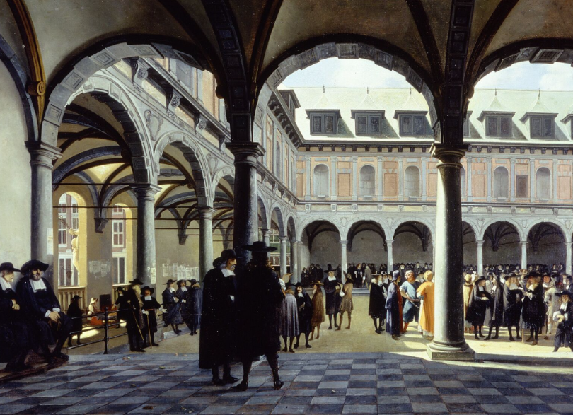

Los mercados y las bolsas internacionales.
Primera Bolsa de Valores
Ámsterdam. Año 1602
Objetivo
Comprenderás que los mercados financieros no son una invención reciente ni americana: nacieron en Ámsterdam hace más de 400 años, y casi todo lo que sabemos hoy sobre acciones, especulación, burbujas y bolsas tiene sus raíces en aquella ciudad del siglo XVII.
Explicación
Les voy a pedir que viajen en el tiempo. No mucho. Solo hasta 1602. Estamos en Ámsterdam. Los Países Bajos son, en ese momento, la potencia económica más importante del mundo. Controlan las rutas comerciales hacia Asia, hacia América, hacia África. Sus barcos surcan todos los mares conocidos. Y hay una empresa, una sola empresa, que está detrás de buena parte de ese poder.
Se llama VOC: las iniciales en neerlandés de la Vereenigde Oostindische Compagnie, que traducimos como Compañía Holandesa de las Indias Orientales.
¿Qué es la VOC? Es, sin exageración, la empresa más poderosa que ha existido jamás en la historia. En su momento de máximo apogeo, a finales del siglo XVII, fletaba más de 150 barcos mercantes, escoltados por una armada de 40 buques de guerra. Empleaba a más de 50.000 personas. Tenía poder para declarar guerras, firmar tratados, acuñar moneda y establecer colonias. Era, literalmente, un imperio disfrazado de empresa.
Pero para financiar todo eso, necesitaba capital. Mucho capital. Más del que ningún grupo de mercaderes podía reunir por su cuenta.
Y ahí está la innovación que cambió el mundo: en 1602, la VOC publicó lo que podríamos llamar el . Su artículo 10 decía: "Todos los residentes de estas tierras pueden comprar acciones de esta Compañía." Por primera vez en la historia documentada, una empresa abría su capital al público general. No solo a los ricos. A cualquiera con algo de dinero.
Para gestionar esa compra y venta de acciones de forma organizada, se creó la Bolsa de Valores de Ámsterdam en la calle Damrak. Las operaciones iniciales se hacían en la casa de la familia . Y aquí hay una curiosidad lingüística que muchos desconocen: la palabra "bolsa" —en español, en francés (bourse), en italiano (borsa)— viene precisamente de ese apellido. Llevamos siglos llamando a los mercados financieros con el nombre de una familia flamenca del siglo XVII.

Ahora conectemos esto con Nueva York. Cuando los holandeses fundaron la ciudad que llamaron Nueva Ámsterdam —hoy Manhattan— diseñaron sus calles siguiendo el modelo holandés. Una de esas calles estaba cortada por un muro de madera construido para proteger la colonia: la calle del muro. En inglés: Wall Street. Cuatrocientos años después, la institución financiera más importante del mundo sigue en esa esquina.
Analogía
Imaginen que quieren construir un barco para ir a buscar especias a Asia —pimienta, clavo, canela— que en Europa valen su peso en oro. El problema: ese viaje cuesta una fortuna, tarda años, y el barco puede hundirse. Ningún comerciante individual puede asumir ese riesgo solo.
La solución holandesa fue genial en su simplicidad: repartir el riesgo entre muchos. Cada persona que compra una acción de la VOC pone un poco de dinero, y a cambio recibe una parte de los beneficios del viaje si sale bien. Si el barco se hunde, pierden solo lo que pusieron —no todo su patrimonio.
Ese concepto —financiar proyectos grandes repartiendo el riesgo entre muchos inversores— es exactamente lo que siguen haciendo hoy las bolsas de valores. La tecnología ha cambiado radicalmente. El principio, no.
Contexto financiero real
La Bolsa de Ámsterdam no solo inventó las acciones en el sentido moderno. Inventó casi toda la ingeniería financiera que conocemos:
- Acciones transferibles: por primera vez, un inversor podía vender su participación a otra persona sin esperar a que la empresa se liquidase. Esto creó la liquidez que hace posible un mercado de valores.
- Ventas en corto: un inversor llamado Isaac le Maire —que era, irónicamente, uno de los mayores accionistas de la VOC— realizó en 1609 la primera venta en corto documentada de la historia, apostando contra la propia empresa en la que había invertido. El concepto de ganar dinero cuando una empresa baja es tan antiguo como el mercado mismo.
- El primer fondo de inversión colectivo del mundo: en 1774, el holandés Abraham van Ketwich creó el fondo Eendragt Maakt Magt —"La unión hace la fuerza"— que permitía a pequeños inversores diversificar su cartera colectivamente. Los ETFs de hoy son, en esencia, el mismo concepto con tecnología del siglo XXI.
- La primera burbuja especulativa documentada: la Tulipomania de 1636-1637, cuando los bulbos de tulipán llegaron a cotizar a precios equivalentes a varias veces el salario anual de un artesano, antes de colapsar. La irracionalidad de los mercados no es moderna: es tan antigua como los propios mercados.
Datos históricos verificados
(Fuentes: Euronews Business, Wikipedia VOC, La Brújula Verde — 2024/2025)
El 20 de marzo de 1602, la Compañía Holandesa de las Indias Orientales anunció la primera oferta pública inicial —OPV u OPI— de la historia, sentando las bases de los mercados financieros modernos. Su artículo 10 establecía: "Todos los residentes de estas tierras pueden comprar acciones de esta Compañía."
La VOC fue la primera sociedad por acciones del mundo, concediéndole el gobierno holandés un monopolio de 21 años para realizar actividades comerciales en Asia. Se la considera la primera corporación multinacional de la historia y la primera compañía que publicó sus ganancias.
Para 1669, la VOC era la empresa privada más rica de la historia: fletaba más de 150 buques mercantes protegidos por una escuadra de 40 buques de guerra, y empleaba a más de 50.000 personas.
Las operaciones iniciales de la bolsa se llevaban a cabo en la casa de la familia , lo que dio origen al término "bolsa" —utilizado en español, francés e italiano para denominar los mercados de valores.
⚠ Todos los datos históricos de esta diapositiva —incluidos los del origen holandés de Wall Street y la conexión Nueva Ámsterdam/Nueva York— corresponden a historia documentada.
Preguntas difíciles y respuestas
«La VOC tenía poder para declarar guerras y esclavizar personas. ¿No es incómodo presentarla como el origen glorioso de los mercados financieros modernos?»
Es una pregunta que merece respuesta honesta, no evasiva. La VOC fue, en efecto, un instrumento de colonialismo, explotación y esclavitud a enorme escala. Parte de la mano de obra que construyó sus colonias fue esclavizada por la fuerza. Eso no se puede separar de su historia. Al mismo tiempo, desde el punto de vista de la historia financiera, sus innovaciones —acciones transferibles, oferta pública, mercado secundario— son genuinamente fundacionales para el sistema que usamos hoy. Se puede reconocer la importancia técnica e histórica de una institución sin romantizarla ni ignorar sus sombras. Los mercados financieros modernos nacen de una empresa que fue simultáneamente una revolución financiera y una máquina de explotación colonial. Esa tensión existe y es honesto decirlo.
«Si la NYSE es la única bolsa importante que mantiene un parqué físico, ¿para qué sirve ese espacio hoy si todo se hace electrónicamente?»
El parqué físico de la NYSE ya no es el lugar donde se ejecutan la mayoría de las operaciones —esas ocurren en servidores a velocidades de microsegundos. Lo que mantiene su función es la presencia de los Designated Market Makers (DMMs): especialistas humanos que están obligados a garantizar liquidez y orden en la apertura y cierre del mercado, y especialmente en momentos de volatilidad extrema. También cumple una función simbólica y de relaciones públicas: el "toque de campana" de apertura es uno de los rituales más reconocibles del capitalismo global, y las empresas que salen a bolsa lo utilizan como momento de visibilidad mediática.
Autoevaluación
¿Cuál fue la gran innovación de la VOC en 1602 que cambió para siempre la historia financiera?
En 1602, la VOC publicó el primer folleto de OPV de la historia. Su artículo 10 decía: «Todos los residentes de estas tierras pueden comprar acciones de esta Compañía». Por primera vez, una empresa abría su capital a cualquier ciudadano —no solo a los ricos—, creando el primer mercado de valores organizado del mundo.
La respuesta correcta es: Abrió su capital al público general mediante la primera OPV de la historia. En 1602, cualquier ciudadano de los Países Bajos podía comprar acciones de la VOC, naciendo así el primer mercado de valores del mundo.
Transición
Hemos hecho un viaje de 400 años: desde los barcos especieros de Ámsterdam hasta el parqué digital de Wall Street. Y ahora llegamos a la penúltima diapositiva de la sesión, donde completamos el mapa con las regiones que determinarán cada vez más el comportamiento de los mercados globales: Asia y los mercados emergentes.